전기기능장 (2016-07-10 기출문제)
1과목: 임의구분
1. 35kV 이하의 가공전선이 철도 또는 궤도를 횡단하는 경우 지표상(레일면상)의 높이는 몇 m이상이어야 하는가?
- 4
- 5
- 6
- 6.5
(정답률: 89%)

2. 사이리스터의 병렬 연결시 발생하는 전류 불평형에 관한 설명으로 틀린 것은?
- 자기(磁氣)적으로 결합된 인덕터를 사용하여 전류 분담을 일정하게 한다.
- 사이리스터에 저항을 병렬로 연결하여 전류 분담을 일정하게 한다.
- 전류가 많이 흐르는 사이리스터는 내부 저항이 감소한다.
- 병렬 연결된 사이리스터가 동시에 턴온되기위해서는 점호 펄스의 상승 시간이 빨라야한다.
(정답률: 57%)
3. PWM 인버터의 특징이 아닌 것은?
- 전압 제어시 응답성이 좋다.
- 스위칭 손실을 줄일 수 있다.
- 여러 대의 인버터가 직류전원을 공용할 수 있다.
- 출력에 포함되어 있는 저차 고조파 성분을 줄일 수 있다.
(정답률: 64%)
4. 동기 발전기의 자기 여자 현상의 방지법이 아닌 것은?
- 발전기의 단락비를 적게 한다.
- 수전단에 변압기를 병렬로 접속한다.
- 수전단에 리액턴스를 병렬로 접속한다.
- 발전기 여러 대를 모선에 병렬로 접속한다.
(정답률: 76%)
5. 2진수(10101110)2을 16진수로 변환하면?
- 174
- 1014
- AE
- 9F
(정답률: 85%)
6. 송전선로에서 복도체를 사용하는 주된 목적은?
- 인덕턴스의 증가
- 정전용량의 감소
- 코로나 발생의 감소
- 전선 표면의 전위 경도의 증가
(정답률: 94%)
7. 3상 배전선로의 말단에 늦은 역률 80%, 200kW의 평형 3상 부하가 있다. 부하점에 부하 와 병렬로 전력용 콘덴서를 접속하여 선로손실을 최소화 하려고 한다. 이 경우 필요한 콘덴서의 용량(kVar)은? (단, 부하단 전압은 변하지 않는 것으로 한다.)
- 1⑤
- 112
- 135
- 150
(정답률: 58%)
8. 선간거리 2D(m), 지름 d(m)인 3상 3선식 가공 전선로의 단위 길이 당 대지정전용량(μF/km)은?
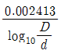
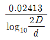
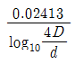
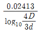
(정답률: 74%)
9. 극수 4, 회전수 1800rpm, 1상의 코일수 83, 1극의 유효자속 0.3Wb의 3상 동기발전기가 있다. 권선계수가 0.96이고, 전기자 권선을 Y결선으로 하면 무부하 단자전압은 약 몇 kV인가?
- 8
- 9
- 11
- 12
(정답률: 65%)
10. 2중 농형전동기가 보통 농형전동기에 비해서 다른 점은?
- 기동전류 및 기동토크가 모두 크다.
- 기동전류 및 기동토크가 모두 적다.
- 기동전류는 적고, 기동토크는 크다.
- 기동전류는 크고, 기동토크는 적다.
(정답률: 91%)
11. 다음 그림에서 계기 X가 지시하는 것은?
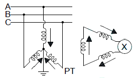
- 영상전압
- 역상전압
- 정상전압
- 정상전류
(정답률: 80%)
12. SCR을 완전히 턴온하여 온상태로 된 후, 양극 전류를 감소시키면 양극 전류의 어떤 값에서 SCR은 온상태에서 오프 상태로 된다. 이 때의 양극 전류는?
- 래칭 전류
- 유지 전류
- 최대 전류
- 역저지 전류
(정답률: 72%)
13. 그림과 같은 회로에서 전압비의 전달함수는?
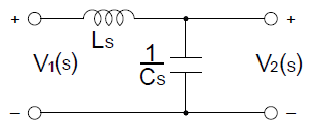
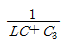
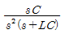
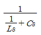
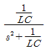
(정답률: 70%)
14. 자기인덕턴스가 L1, L2 상호인덕턴스가 M인 두 회로의 결합계수가 1인 경우 L1, L2, M의 관계는?
- L1・L2=M
- L1・L2=M3
- L1・L2>M2
- L1・L2=M2
(정답률: 83%)
15. 권수비 50인 단상변압기가 전부하에서 2차 전압이 115V, 전압변동률이 2%라 한다. 1차 단자전압(V)은?
- 3381
- 3519
- 4692
- 5865
(정답률: 67%)
16. 주택배선에 금속관 또는 합성수지관공사를 할 때 전선을 2.5mm2의 단선으로 배선하려고 한다. 전선관의 접속함(정션 박스) 내에서 비닐테이프를 사용하지 않고 직접 전선 상호간을 접속하는데 가장 편리한 재료는?
- 터미널 단자
- 서비스 캡
- 와이어 커넥터
- 절연튜브
(정답률: 90%)
17. 비투자율 3000인 자로의 평균 길이 50㎝, 단면적 30cm2인 철심에 감긴, 권수 425회의 코일에 0.5A의 전류가 흐를 때 저축되는 전자(電磁)에너지는 약 몇 J인가?
- 0.25
- 0.51
- 1.03
- 2.07
(정답률: 48%)
18. 단상 교류 위상제어 회로의 입력 전원전압 이 vs=Vmsinθ이고, 전원 vs 양의 반주기 동안 사이리스터 T1을 점호각 α에서 턴온 시키고, 전원의 음의 반주기 동안에는 사이리스터 T2를 턴온 시킴으로써 출력전압(v0)의 파형을 얻었다면 단상 교류 위상제어 회로의 출력전압에 대한 실효값은?
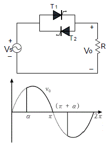
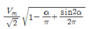
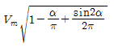
- 복원중(정확한 보기 내용을 아시는분께서는 자유게시판에 등록 부탁 드립니다.)
- 복원중(정확한 보기 내용을 아시는분께서는 자유게시판에 등록 부탁 드립니다.)
(정답률: 72%)
19. 전동기의 외함과 권선 사이에 절연상태를 점검하고자 한다. 다음 중 필요한 것은 어느 것인가?
- 접지저항계
- 전압계
- 전류계
- 메거
(정답률: 94%)
20. MOS-FET의 드레인 전류는 무엇으로 제어 하는가?
- 게이트 전압
- 게이트 전류
- 소스 전류
- 소스 전압
(정답률: 83%)
2과목: 임의구분
21. 2대의 직류 분권발전기 G1, G2를 병렬 운전시킬 때, G1의 부하 분담을 증가시키려면 어떻게 하여야 하는가?
- G1의 계자를 강하게 한다.
- G2의 계자를 강하게 한다.
- G1, G2의 계자를 똑같이 강하게 한다.
- 균압선을 설치한다.
(정답률: 77%)
22. 반파 정류 회로에서 직류 전압 220V를 얻는데 필요한 변압기 2차 상전압은 약 몇 V인가? (단, 부하는 순저항이고, 변압기 내의 전압강하는 무시하며, 정류기 내의 전압강하는 50V로 한다.)
- 300
- 450
- 600
- 750
(정답률: 74%)
23. 단상 전파 정류회로를 구성한 것으로 옳은 것은?
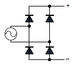
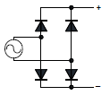
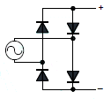
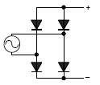
(정답률: 89%)
24. 전기자 권선에 의해 생기는 전기자 기자력을 없애기 위하여 주 자극의 중간에 작은 자극으로 전기자 반작용을 상쇄하고 또한 정류에 의한 리액턴스 전압을 상쇄하여 불꽃을 없애는 역할을 하는 것은?
- 보상권선
- 공극
- 전기자권선
- 보극
(정답률: 88%)
25. 화약류 저장소 안에는 전기설비를 시설하여서는 아니 되나 백열전등이나 형광등 또는 이들에 전기를 공급하기 위한 전기설비를 금속관공사에 의한 규정 등을 준수하여 시설하는 경우에 는 설치할 수 있다. 설치할 수 있는 시설기준으로 틀린 것은?
- 전기기계기구는 전폐형의 것일 것
- 전로의 대지전압은 300V 이하일 것
- 케이블을 전기기계기구에 인입할 때에는 인입구에서 케이블이 손상될 우려가 없도록시설할 것
- 전기설비에 전기를 공급하는 전로에는 과전류 차단기를 모든 작업자가 쉽게 조작할수 있도록 설치할 것
(정답률: 88%)
26. 가로 25m, 세로 8m 되는 면적을 갖는 상가에 사용전압 220V, 15A 분기회로로 할 때, 표준 부하에 의하여 분기회로수를 구하면 몇 회로로 하면 되는가?
- 1 회로
- 2 회로
- 3 회로
- 4 회로
(정답률: 76%)
27. 그림의 트랜지스터 회로에 5V 펄스 1개를 RB저항을 통하여 인가하면 출력 파형 V0는? (문제 오류로 실제 시험에서는 1, 3번이 정답처리 되었습니다. 여기서는 3번을 누르면 정답 처리 됩니다.)
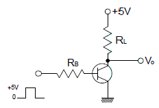
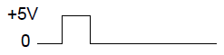
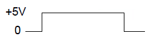
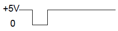
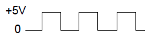
(정답률: 72%)
28. 전력 원선도의 가로축과 세로축은 각각 무엇을 나타내는가?
- 단자 전압과 단락 전류
- 단락 전류와 피상 전력
- 단자 전압과 유효 전력
- 유효 전력과 무효 전력
(정답률: 84%)
29. 그림과 같은 회로에서 저항 R2에 흐르는 전류는 약 몇 A인가?
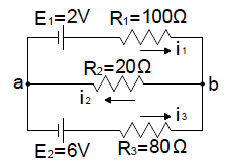
- 0.066
- 0.096
- 0.483
- 0.655
(정답률: 68%)
30. 부하를 일정하게 유지하고 역률 1로 운전중인 동기전동기의 계자전류를 감소시키면?
- 아무 변동이 없다.
- 콘덴서로 작용한다.
- 뒤진 역률의 전기자 전류가 증가한다.
- 앞선 역률의 전기자 전류가 증가한다.
(정답률: 69%)
31. 엔트런스 캡의 주된 사용 장소는 다음 중 어느 것인가?
- 저압 인입선 공사시 전선관 공사로 넘어갈 때 전선관의 끝부분
- 케이블 헤드를 시공할 때 케이블 헤드의 끝 부분
- 케이블 트레이 끝부분의 마감재
- 부스 덕트 끝부분의 마감재
(정답률: 86%)
32. 정격출력 20kVA, 정격전압에서의 철손150W, 정격전류에서 동손 200W의 단상변압기에 뒤진 역률 0.8인 어느 부하를 걸었을 경우 효율이 최대라 한다. 이 때 부하율은 약 몇 %인가?
- 75
- 87
- 90
- 97
(정답률: 61%)
33. 정류회로에서 교류 입력 상(phase) 수를 크게 했을 경우의 설명으로 옳은 것은?
- 맥동 주파수와 맥동률이 모두 증가한다.
- 맥동 주파수와 맥동률이 모두 감소한다.
- 맥동 주파수는 증가하고 맥동률은 감소한다.
- 맥동 주파수는 감소하고 맥동률은 증가한다.
(정답률: 78%)
34. 수전단 전압 66kV, 전류 100A, 선로저항 10Ω, 선로 리액턴스 15Ω, 수전단 역률 0.8인 단거리 송전선로의 전압강하율은 약 몇 %인가?(오류 신고가 접수된 문제입니다. 반드시 정답과 해설을 확인하시기 바랍니다.)
- 1.34
- 1.82
- 2.26
- 2.58
(정답률: 31%)
35. 3300/110V 계기용 변압기(PT)의 2차측 전압을 측정하였더니 1⑤V였다. 1차측 전압은 몇 V 인가?
- 3450
- 3300
- 3150
- 3000
(정답률: 80%)
36. 전기자 전류 20A일 때 100N·m의 토크를 내는 직류 직권 전동기가 있다. 전기자 전류가 40A로 될 때 토크는 약 몇 kg·m 인가?
- 20.4
- 40.8
- 61.2
- 81.6
(정답률: 56%)
37. 그림과 같은 회로에서 스위치 S를 t=0에서 닫았을 때
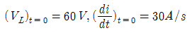
이다. L의 값은 몇 H인가?- 0.5
- 1.0
- 1.25
- 2
(정답률: 54%)
38. 다음 논리식을 간략화 하면?
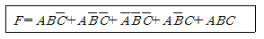
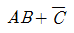
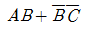
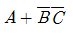
- B+AC
(정답률: 65%)
39. 단상 3선식 220/440V 전원에 다음과 같이 부하가 접속 되었을 경우 설비 불평형률은 약 몇 %인가?
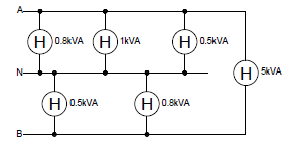
- 23.3
- 26.2
- 32.6
- 42.5
(정답률: 62%)
40. 평행판 콘덴서에서 전압이 일정한 경우 극판 간격을 2배로 하면 내부의 전계의 세기는 어떻게 되는가?
- 4배로 된다.
- 2배로 된다.
- 1/4로 된다.
- 1/2로 된다.
(정답률: 57%)
3과목: 임의구분
41. 옥내에 시설하는 전동기에는 전동기가 소손될 우려가 있는 과전류가 생겼을 때에 자동적으로 이를 저지하거나 경보하는 장치를 하여야 한다. 이 장치를 시설하지 않아도 되는 경우는?
- 전류 차단기가 없는 경우
- 정격 출력이 0.2kW 이하인 경우
- 정격 출력이 2kW 이상인 경우
- 전동기 출력이 0.5kW이며, 취급자가 감시할수 없는 경우
(정답률: 86%)
42. 500lm의 광속을 발산하는 전등 20개를 1000m2방에 점등하였을 경우 평균조도는 약 몇 lx인 가? (단, 조명률은 0.5, 감광 보상률은 1.5이다.)
- 3.33
- 4.24
- 5.48
- 6.67
(정답률: 68%)
43. 변압기 단락시험에서 2차측을 단락하고 1차 측에서 정격전압을 가하면 큰 단락전류가 흘러 변압기가 소손 된다. 이에 따라 정격주파수의 전압을 서서히 증가시켜 1차 정격전류가 될 때 의 변압기 1차측 전압을 무엇이라 하는가?
- 부하 전압
- 절연내력 전압
- 정격주파 전압
- 임피던스 전압
(정답률: 80%)
44. 다음 논리식을 간소화 하면?
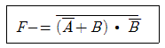
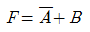
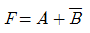
- F=A+B
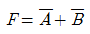
(정답률: 65%)
45. 접지재료의 구비 조건이 아닌 것은?
- 전류용량
- 내부식성
- 시공성
- 내전압성
(정답률: 71%)
46. 인버터 제어라고도 하며 유도전동기에 인가되는 전압과 주파수를 변환시켜 제어하는 방식은?
- VVVF 제어방식
- 궤환 제어방식
- 1단속도 제어방식
- 워드레오나드 제어방식
(정답률: 91%)
47. 그림의 부스터 컨버터 회로에서 입력전압 (Vs)의 크기가 20V이고 스위칭 주기(T)에 대한 스위치(SW)의 온(On) 시간(ton)의 비인 듀티비(D)가 0.6이었다면, 부하저항(R)의 크기가 10Ω인 경우 부하저항에서 소비되는 전력(W)은?
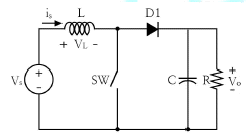
- 100
- 150
- 200
- 250
(정답률: 48%)
48. 인버터의 스위칭 소자와 역병렬 접속된 다이오드에 관한 설명으로 가장 적합한 것은?
- 스위칭 소자에 내장된 다이오드이다.
- 부하에서 전원으로 에너지가 회생될 때 경로가 된다.
- 스위칭 소자에 걸리는 전압 스트레스를 줄이기 위한 것이다.
- 스위칭 소자의 역방향 누설 전류를 흐르게 하기 위한 경로이다.
(정답률: 65%)
49. 저압 옥내 배선을 금속관 공사에 의하여 시설하는 경우에 대한 설명으로 옳은 것은?
- 전선은 옥외용 비닐절연전선을 사용하여야 한다.
- 전선을 굵기에 관계없이 연선을 사용하여야 한다.
- 콘크리트에 매설하는 금속관의 두께는 1.2㎜이상이어야 한다.
- 옥내 배선의 사용전압이 교류 600V 이하인 경우 관에는 제3종 접지공사를 하여야 한다.
(정답률: 78%)
50. 크기가 다른 3개의 저항을 병렬로 연결했을 경우의 설명으로 옳은 것은?
- 각 저항에 흐르는 전류는 모두 같다.
- 각 저항에 걸리는 전압은 모두 같다.
- 합성 저항값은 각 저항의 합과 같다.
- 병렬연결은 도체저항의 길이를 늘이는 것과 같다.
(정답률: 86%)
51. 그림과 같은 회로의 기능은?
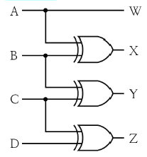
- 크기 비교기
- 디멀티플렉서
- 홀수 패리티 비트 발생기
- 2진 코드의 그레이코드 변환기
(정답률: 79%)
52. 지중에 매설되어 있는 케이블의 전식(전기적인 부식)을 방지하기 위한 대책이 아닌 것은?
- 희생 양극법
- 외부 전원법
- 선택 배류법
- 자립 배양법
(정답률: 75%)
53. 지선과 지선용 근가를 연결하는 금구는?
- U볼트
- 지선 롯트
- 볼쇄클
- 지선 밴드
(정답률: 76%)
54. 유도 전동기의 슬립이 커지면 커지는 것은?
- 회전수
- 2차 주파수
- 2차 효율
- 기계적 출력
(정답률: 72%)
55. 이항분포(binomal distribution)에서 매회 A가 일어나는 확률이 일정한 값 P일 때, n회의 독립시행 중 사상 A가 x회 일어날 확률 P(x)를 구하는 식은? (단, N은 로트의 크기, n은 시료의 크기, P는 로트의 모부적합품률이다.)
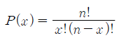
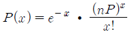
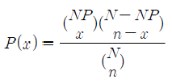
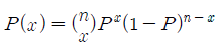
(정답률: 65%)
56. 다음 표는 어느 자동차 영업소의 월별 판매 실적을 나타낸 것이다. 5개월 단순이동평균법으로 6월의 수요를 예측하면 몇 대인가?
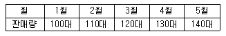
- 120대
- 130대
- 140대
- 150대
(정답률: 83%)
57. 샘플링에 관한 설명으로 틀린 것은?
- 취락 샘플링에서는 취락 간의 차는 작게, 취락 내의 차는 크게 한다.
- 제조공정의 품질특성에 주기적인 변동이 있는 경우 계통 샘플링을 적용하는 것이 좋다.
- 시간적 또는 공간적으로 일정 간격을 두고 샘플링을 하는 방법을 계통 샘플링이라고 한다.
- 모집단을 몇 개의 층으로 나누어 각 층마다 랜덤하게 시료를 추출하는 것을 층별 샘플링 이라고 한다.
(정답률: 59%)
58. 다음 내용은 설비보전조직에 대한 설명이다. 어떤 조직의 형태에 대한 설명인가?
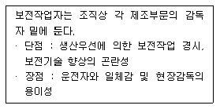
- 집중보전
- 지역보전
- 부문보전
- 절충보전
(정답률: 71%)
59. 표준시간 설정 시 미리 정해진 표를 활용하여 작업자의 동작에 대해 시간을 산정하는 시간 연구법에 해당되는 것은?
- PTS법
- 스톱워치법
- 워크샘플링법
- 실적자료법
(정답률: 81%)
60. 다음은 관리도의 사용 절차를 나타낸 것이다. 관리도의 사용 절차를 순서대로 나열한 것은?
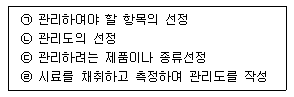
- ㉠→㉡→㉢→㉣
- ㉠→㉢→㉣→㉡
- ㉢→㉠→㉡→㉣
- ㉢→㉣→㉠→㉡
(정답률: 83%)